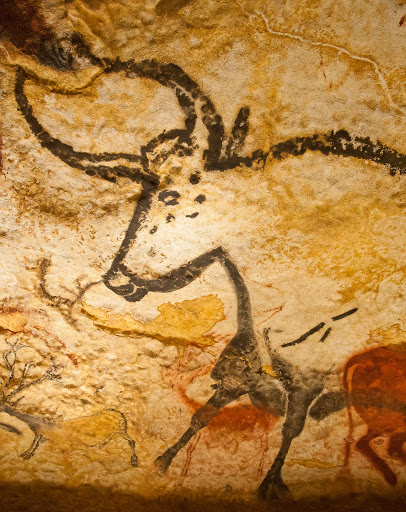

Homme de Néandertal
Lieu de vie:
Afrique (Éthiopie, Kenya)
Évolution:
Au Paléolithique moyen apparaissent les premières manifestations de préoccupations esthétiques ou symboliques : utilisation d'ocre, utilisation de plumes, gravure de traits, de lignes ou de signes géométriques simples sur des os ou des pierres.
Oeuvre:
La salle des Taureaux : Les motifs pariétaux de la salle des Taureaux sont les plus imposants de l'art paléolithique. Cet ensemble regroupe 130 figures dont 36 représentations animales, une cinquantaine de signes géométriques, le reste étant des traces d’activité.
